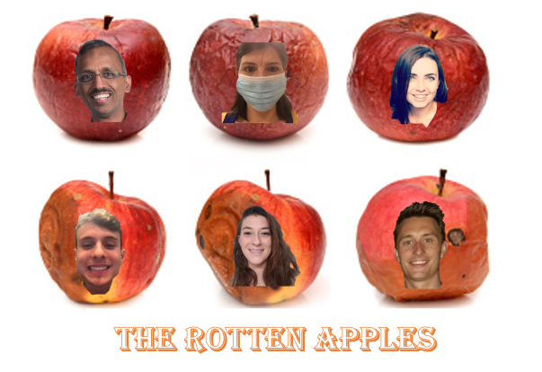

This project is analyzing the correlation between crime and weather in Atlanta. We hypothesize that weather conditions impact the level of crime. We suggest that the impact weather has on crime is not consistent amongst all types of crime, with some crime increasing when weather conditions encourages individuals to stay home(domestic violence) and other crime decreasing when weather conditions encourage individuals to leave the home (home burglary).
When looking at all types of crime committed in Atlanta over the span of 2009-2018, we found the below to be true:
RESULTS: There is a correlation between weather and crime
When looking at the historical crime and weather data from 2009 – 2018, we find that on average, if temperature increases by 1 degree, we estimate crimes to increase by .82. Likewise, for every additional percent of rain there is a day, we estimate crimes to increase by 5.62 crimes. Both variables are highly significant, and our model has an adjusted R-square of .96. The closer R-square is to 1, the more of the relationship our model explains, this model explains a large portion of the relationship of crime to weather
Using our model, we are able to forecast the number of crimes that will be committed in Atlanta based on temperature and rain predicted.
ATLANTA
Loading....
Forecasted Crime:
2020 Crime Counter
Our crime counter looks at all reported crime in the city of Atlanta in 2020, as of the latest data provided by the city of Atlanta.
Total Atlanta Crimes in 2020:
Predicted Crime vs Actual Crime
Choose a date from the dropdown below to see a week of actual crimes commited vs forecasted crimes based on our model.
Please select a date from the drop down:
Weather vs Crime on a Specific Day
To see actual locations of specific crimes committed in Atlanta on a day 2020, choose a date from the dropdown. An icon will appear in the top right of the graph to indicate if it was more sunny or more rainy on that day.
Select a Date:
Weather vs Crime Over Time
The graph below shows crimes committed vs a specific weather metric over the span of 10 years. Choose a metric from the Crime and Weather dropdowns to see the correlation over time of weather and crime
Weather Metric:
Crime Metric:
Creation of the Crime Forecast Model and Overview of Types of Crime in Analysis
The Atlanta Police Department collects and distributes data on several different kinds of crime that is recorded on a weekly basis. For the purposes of this exercise, we have simplified the data into 5 separate categories of crime, though there is a fair amount of overlap which may occur for these different types of crime. Below is a high level overview of the different types of crime which are included in this analysis, as well as some background on the regressions used to calculate the crime forecast.
Summary
- There are 5 types of crime included in our "Total Crime" regressions.
- The formula used to predict the total number of crimes each day is All Crimes = (0.82 * Temperature) + (5.62 * percentage of precipitation on given day).
- When looking at the historical crime and weather data from 2009 – 2018, we find that on average, if temperature increases by 1 degree, the total number of crimes that day increases by 0.82.
- Likewise, for every additional percent of rain there is a day, the number of crimes that occur that day increases by 5.62.
- Both variables are highly significant, and our model has an adjusted R-square of 0.96. The closer this number is to 1, the more of the relationship our model explains, and this model explains a large portion of the relationship of crime to weather.
Larceny
- Larceny, which is often called theft or petty theft, is the taking of another person’s possession without their consent, with the intent to never return the possession. A common example of larceny include shoplifting. This can also include the theft of money or other physical goods.
- The formula used to predict the total number of larcenies each day is Larceny = (0.51 * Temperature) + (4.27 * percentage of precipitation on given day).
- When looking at the historical crime and weather data from 2009 – 2018, we find that on average, if temperature increases by 1 degree, the total number of larcenies that day increases by 0.51.
- Likewise, for every additional percent of rain there is a day, the number of larcenies that occur that day increases by 4.27.
- Both variables are highly significant, and our model has an adjusted R-square of 0.94. Larceny accounts for over half of all crimes, so it is expected to have similar outcomes to the aggregated, all crime regression.
Robbery
- Robbery is another form of theft, but it involves taking an item from an individual without their consent while using force or the threat of force. While robbery is a violent crime, it does not necessarily include physical harm, as it can also include taking property under the threat of violence. An example of robbery would include robbing a store at gunpoint.
- The formula used to predict the total number of robberies each day is Robbery = (0.38 * Temperature) + (0.69 * percentage of precipitation on given day).
- When looking at the historical crime and weather data from 2009 – 2018, we find that on average, if temperature increases by 1 degree, the total number of robberies that day increases by 0.38.
- Likewise, for every additional percent of rain there is a day, the number of robberies that occur that day increases by 0.69.
- Both variables are highly significant, and our model has an adjusted R-square of 0.84. While our coefficients are significant, their values are much smaller than that of our other models. This suggests that while there is a positive relationship with temperature and robberies, there may be other factors that influence robberies aside from the weather.
Burglary
- Burlary is another crime which involves theft, but in order to commit a burglary you must enter a dwelling or a structure (or demonstrate the intention to enter a dwelling or structure) with the intention of committing the crime within that structure. A common example of a burglary would be breaking into a person’s home or apartment.
- The formula used to predict the total number of burglaries each day is Burglary = (0.093 * Temperature) + (0.585 * percentage of precipitation on given day).
- When looking at the historical crime and weather data from 2009 – 2018, we find that on average, if temperature increases by 1 degree, the total number of burglaries that day increases by 0.093.
- Likewise, for every additional percent of rain there is a day, the number of burglaries that occur that day increases by 0.585.
- While temperature is significant, the percentage of rain is not. Our model has an adjusted R-square of 0.90.
Auto Theft
- Auto theft includes the unauthorized taking of another person’s car with the intent to permanently deprive the owner of the use of their vehicle.
- The formula used to predict the total number of auto thefts each day is Auto Theft = (0.01 * Temperature) + (1.48 * percentage of precipitation on given day).
- When looking at the historical crime and weather data from 2009 – 2018, we find that on average, if temperature increases by 1 degree, the total number of auto thefts that day increases by 0.01.
- Likewise, for every additional percent of rain there is a day, the number of auto thefts that occur that day increases by 1.48.
- Both variables are highly significant, and our model has an adjusted R-square of 0.88.
Homicide
- Homicide, commonly referred to as murder, involves the deliberate and unlawful killing of one person by another. Homicides can fall into many legal categories, and can also include justfiable homicide and manslaughter.
- The formula used to predict the total number of homicides each day is Homicide = (0.013 * Temperature) + (0.18 * percentage of precipitation on given day).
- When looking at the historical crime and weather data from 2009 – 2018, we find that on average, if temperature increases by 1 degree, the total number of homicides that day increases by 0.013.
- Likewise, for every additional percent of rain there is a day, the number of homicides that occur that day increases by 0.18.
- Both variables are highly significant, and our model has an adjusted R-square of 0.88. Like our robberies model, our explanatory variables are significant but close to 0. This suggests that there may be more factors aside from temperature and percentage of rain that explain the levels of robberies and homicide in Atlanta.
Aggravated Assault
- Aggravated assault is an attempt to cause serious bodily harm to an individual with disregard for human life. These crimes often involve the use of a weapon, or significant malicious intent.
- The formula used to predict the total number of aggravated assaults each day is Aggravated Assault = (0.07 * Temperature) - (0.47 * percentage of precipitation on given day).
- When looking at the historical crime and weather data from 2009 – 2018, we find that on average, if temperature increases by 1 degree, the total number of aggravated assaults that day increases by 0.07.
- Likewise, for every additional percent of rain there is a day, the number of aggravated assaults that occur that day decreases by 0.47.
- Both variables are highly significant, and our model has an adjusted R-square of 0.84. Aggravated assault is the only metric that shows a negative relationship with precipitation, with fewer assaults occurring on more rainy days.
Project Process and Complications Along the Way
Initially, our team was excited to work with data related to movie going patrons, and how much more likely people were to go to movies based on the weather. Does a rainy day typically increase the relative spending at local theaters? Unfortunately, due to COVID-19, movie-going data has experienced some significant variability of late. This led to the natural transition of our team from “The Rotten Tomatoes” to “The Rotten Apples”, showing how weather impacts crime rates.
- When looking at the forecasted data for Atlanta’s weather, if there was a 0 percent chance of rain, it just didn’t include any data at all. We had to create a conditional argument to show if there was going to be rain that day or not by converting it to value of 0 or 1 and then took the average of the 3-hour intervals for that day to determine the percent chance of rain.
- Flask CORS security issue.
- GIT hub issue with merge conflicts.
- Large file issue. Used AWS S3 to store data.
- The issue in storing data Pandas data frame date field in Mongo. The date went into the systems Unix date-time #.
- D3 JSON accessing multiple API calls. Coordination between calls.
- Database size issue with the Trial DB only allowing a limited number of entries. We fixed the issues in two ways.
- We had an issue with index,html in the wrong folder. When we moved it around things broke and we had to fix all the pointers.
- Issue with github page. API calls would not work since we did not upload the API Keys. Therefore, we had to launch a nginx web server in AWS for our web site.
